It is possible to generate the distributions for any of these test statistics
under-the-null analytically (that is, with statistical formulas), because the
specifications are neither statistically independent nor part of a single model.
This function hence generates such distributions by relying on resampling under-the-null.
This involves modifying the observed data so that the null hypothesis is known to be true,
and then drawing random samples of the modified data. The resulting object of class
specr.boot can be summarized and plotted with generic functions.
boot_null(x, y, n_samples = 500, ...)A fitted specr.object, resulting from running specr().
A specr.setup object, resulting from running setup()
Number of bootstrap samples to be drawn. Defaults to 500.
Further arguments that can be passed to future_map. This only becomes
important if parallelization is used. When a plan for parallelization is set, one
can also set .progress = TRUE to print a progress bar during the fitting process.
See details for more information on parallelization.
a object of class specr.boot that represents a list with the original and bootstrapped results.
A third step of specification curve analysis involves statistical inference, answering the question: considering the full set of reasonable specifications jointly, how inconsistent are the results with the null hypothesis of no effect?
By default, the function fits the bootstrapped models across all specifications sequentially
(one after the other). If the data set is large, the models complex (e.g.,
large structural equation models, negative binomial models, or Bayesian models),
and the number of specifications is large, it can make sense to parallelize
these operations. One simply has to load the package furrr (which
in turn, builds on future) up front. Then parallelizing the fitting process
works as specified in the package description of furr/future by setting a
"plan" before running boot_null such as:
plan(multisession, workers = 4)
However, there are many more ways to specifically set up the plan, including
different strategy than multisession. For more information, see
vignette("parallelization") and the
reference page
for plan().
Simonsohn, U., Simmons, J.P. & Nelson, L.D. (2020). Specification curve analysis. Nature Human Behaviour, 4, 1208–1214. https://doi.org/10.1038/s41562-020-0912-z
# Setup up specifications
# Requires to keep full model
tidy_full <- function(x) {
fit <- broom::tidy(x, conf.int = TRUE)
fit$res <- list(x) # Store model object
return(fit)
}
specs <- setup(data = example_data,
y = c("y1", "y2"),
x = c("x1", "x2"),
model = "lm",
controls = c("c1", "c2"),
fun1 = tidy_full)
# Run analysis
results <- specr(specs)
# Run bootstrapping
boot_models <- boot_null(results, specs, n_samples = 2) # better 1,000!
# Summarize findings
summary(boot_models)
#> Error in pivot_wider(., names_from = grp, values_from = value): could not find function "pivot_wider"
# Plot under-the-null curves on top of specification curve
plot(boot_models)
#> Warning: attributes are not identical across measure variables; they will be dropped
